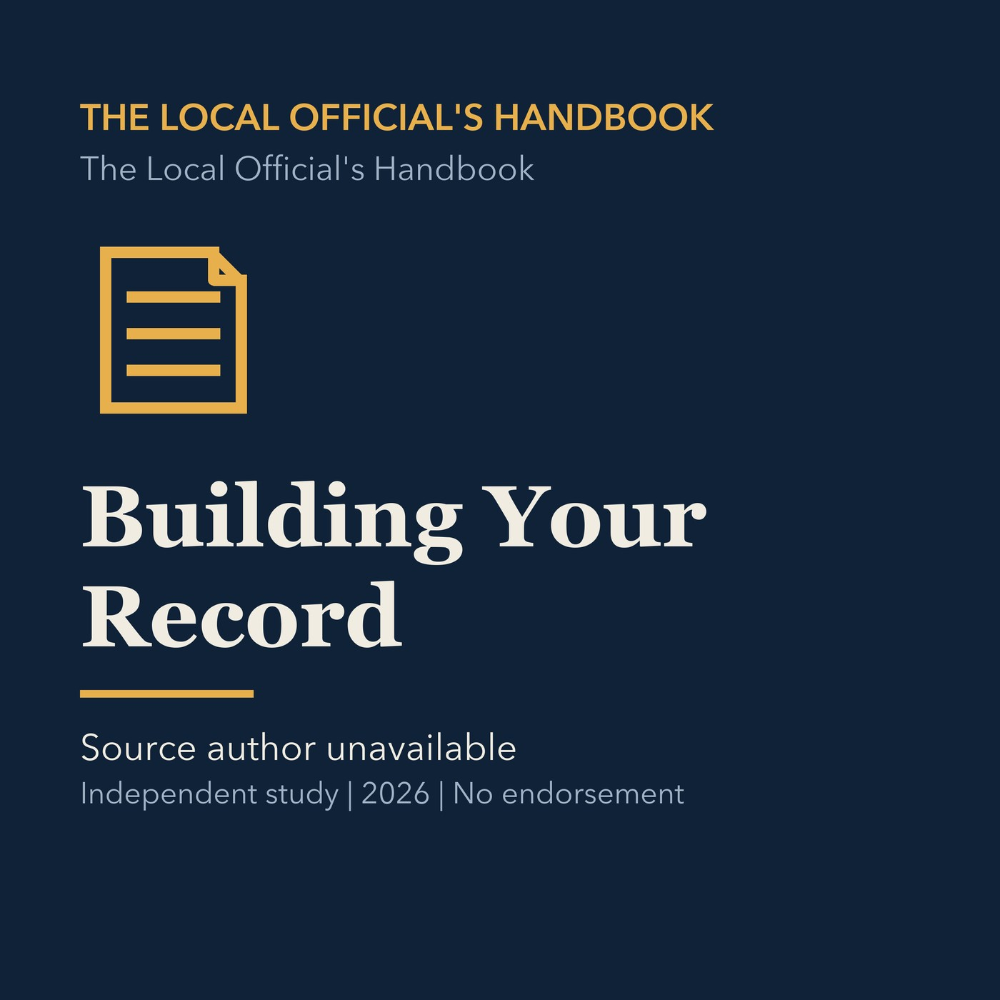

EPISODE 14
Building Your Record
Explains how votes, minutes, findings, training, and documented reasoning build a public official's record.

- Stable GUID
9afd6920-2c8c-50a9-a896-2e7d8b80c4c9- Release
- local-officials-handbook-v2026.4
- SHA-256
d8a1072bfecd03b6d6aa2df367e3fb5f22f646104b7163653b6481b5d1d68f91